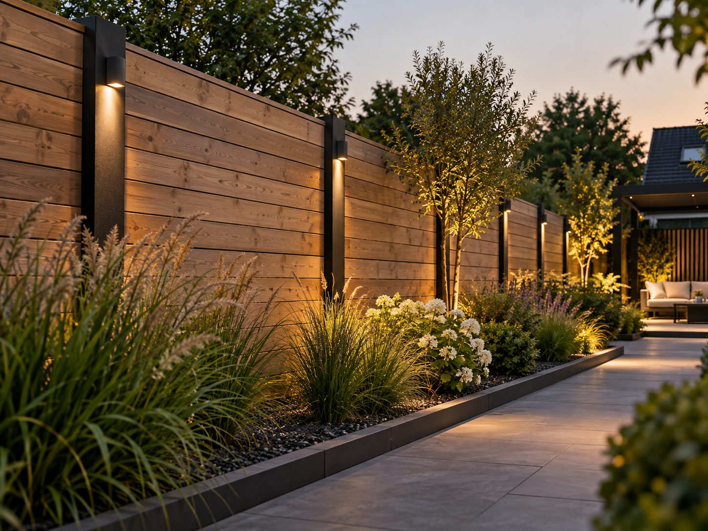

Çitler
Daha fazla mahremiyet ve güzel bir görünüm; Sealcleaning tarafından Dordrecht ve çevresinde özenle yerleştirilir.
Örnek görsel, tamamlanmış bir proje değildir
- Kişisel danışmanlık
- Farklı stillerden seçim
- Profesyonel uygulama
- Net teklif
Çitlerimiz
Bahçenize uyan stili seçin. Farklı stil ve bitişlerden ilham alın. Olanakları birlikte konuşuruz ve kesin malzemeleri önceden sizinle netleştiririz.


Ahşap-beton
Beton taban plakası ve beton direkler üzerinde ahşap
Beton direkler arasında sıcak ahşap


Çitinizi 3B tasarlayınTeklif isteyin
Örnek görseller: olası uygulamalara örnektir; Sealcleaning'in tamamladığı projeler değildir ve kesin ürün garantisi vermez. Ahşap türü (örneğin çam veya Douglas), ölçüler ve bitişi önceden sizinle netleştiririz.
Bilmekte fayda var
Çit yerleştirme hakkında her şey
Çit neyi kapsar?
Çit yerleştirilirken direkler sağlamca sabitlenir ve paneller terazisinde monte edilir. Değişimde önce eski çiti kaldırır ve düzgünce taşırız, sonra yenisini yerleştiririz.
Bu kimin için?
Bahçesinde mahremiyet isteyen, eskimiş veya hasarlı bir çiti değiştirmek isteyen ya da komşularla ortak arsa sınırını yeniden düzenlemek isteyen ev sahipleri için.
Bu hangi sorunları çözer?
- Çürümüş veya eğri, değiştirilmesi gereken bir çit.
- Bahçede yetersiz mahremiyet.
- Eksik veya tamamlanmamış bir arsa ayırıcı.
Hangi işleri yapabiliriz?
- Eski çitin kaldırılması ve taşınması
- Direklerin sabitlemeyle birlikte yerleştirilmesi
- Çit panellerinin montajı (ahşap, kompozit veya başka malzeme)
- Borderın çevresindeki bitiş
Yaklaşımınızı seçin
Danışmanlık ve uygulama
Malzeme, yükseklik ve adetler konusunda danışmanlık veririz; malzeme teklifimize eklenebilir, tek başına veya montajla birlikte. Çiti biz yerleştiririz ve eski çiti kaldırabiliriz.
Yalnızca kendi malzemenizin yerleştirilmesi
Malzemeyi zaten seçtiniz veya satın aldınız mı? Görüştükten sonra biz yerleştiririz. Miktar ve uygunluğu önceden kontrol ederiz; getirilen malzemedeki kusurlar veya eksikler sorumluluğumuz dışındadır.
Onarım veya değişim
Gevşek direkler, eğri paneller veya bozuk bir kapı: değişim önermeden önce onarımın mantıklı olup olmadığını değerlendiririz.
Teklifinizde neler var, neler standart değil?
Teklifte her zaman belirtilir
- Her kalem için miktar, malzeme ve birim (m², m¹, adet)
- İşçilik saat başına, çalışan başına KDV hariç sabit 60,00 € saat ücretiyle
- Taşıma, hazırlık ve kazı işlerinin dahil olup olmadığı
- Hangi kalemlerin hâlâ tahmini bedel veya 'talep üzerine' olduğu ve nedeni
- Sonradan sürpriz yaşamamak için kendinizin neleri hazırlayacağı
Standart olarak dahil değil
- İzinler ve harçlar (gerekirse siz ilgilenirsiniz ya da önceden ayrıca anlaşırız)
- Elektrik bağlantıları: bunları yetkili bir elektrikçiye yaptırın
- Zemindeki öngörülemeyen engellerin kaldırılması (moloz, eski temeller, kökler)
- Kablo ve boru çalışmaları ile gizli kusurlardan kaynaklanan hasarların onarımı
- Teklifte açıkça belirtilmemişse toprak veya bahçe atıklarının taşınması
Teklif esastır: her kalemde tam olarak nelerin dahil olduğu ve nelerin olmadığı yazar. Emin değilseniz onay vermeden önce bize sorun.
Bir sipariş nasıl ilerler?
Yerinde ölçüm
Uzunluğu ölçer, istenen malzemeyi ve yüksekliği konuşuruz.
Teklif
Yerleştirme veya değişim için net bir teklif alırsınız.
Uygulama
Çiti sağlam ve terazisinde yerleştirir, eski malzemeleri kaldırırız.
Fiyatı hangi etkenler belirler?
Çit fiyatı şunlara bağlıdır:
- Çitin uzunluğu
- Seçilen malzeme (ahşap, kompozit, metal)
- Eski çitin kaldırılması ve taşınması
- Zemin (beton, toprak, döşeme)
Çitler, malzeme ve bitişe bağlı olarak metre başına tekliflendirilir. Çit malzemesi, uygun seçenekler hakkında danışmanlıktan sonra teklife eklenebilir.
Uygulamadan
Yerleştirdiğimiz çitler
Sealcleaning, yılların uygulama deneyimine sahip ustaların desteklediği, Dordrecht merkezli genç ve istekli bir bahçıvanlık şirketidir. İşi yapan kişiyle doğrudan konuşursunuz. Bizi daha yakından tanıyın


Sık sorulan sorular
Çitler hakkında sorular
Çitin malzemesini kim seçer?
İstediğiniz malzemeyi siz seçersiniz; uygun seçenekler ve miktarlar konusunda biz danışmanlık veririz.
Eski çiti de taşıyor musunuz?
Evet, eski çitin kaldırılması ve taşınması işin bir parçasıdır.
Direkler ne kadar sağlam sabitlenir?
Direkler, çitin yüksekliği ve malzemesine uygun olarak sağlamca gömülür ve sabitlenir.
Size özel danışmanlık mı istersiniz?
Stil, yükseklik ve malzeme konusunda sizinle birlikte düşünür, olanakları bahçenizde konuşuruz.